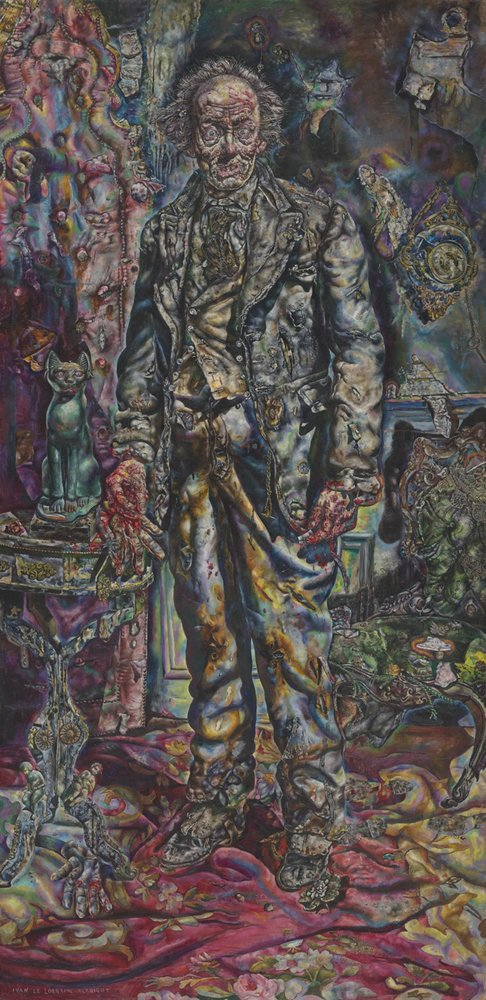

Picture of Dorian Gray
Ivan Albright · 1943–44 · Oil on canvas · 215.9 × 106.7 cm · Art Institute of Chicago
In copyright. Look and learn: shown for study, not for download.
Albright painted this for Metro-Goldwyn-Mayer's film of The Picture of Dorian Gray, released in 1945. He insisted on working under the same harsh lights as on the set. The portrait appeared in Technicolor in an otherwise black-and-white film. When the canvas was shown at the Art Institute of Chicago later that year, the Chicago Tribune reported that the museum was struggling to handle the crowds. Allegedly he kept retouching it while it was on show there. He gave it to the museum in 1977.